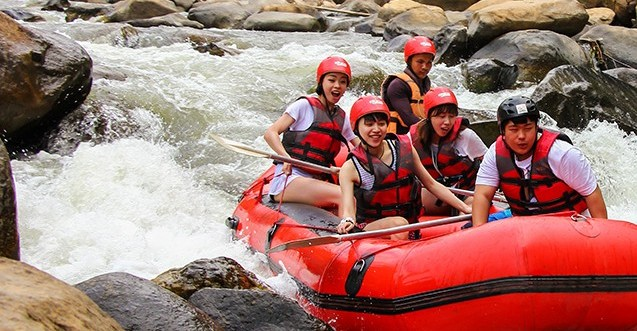
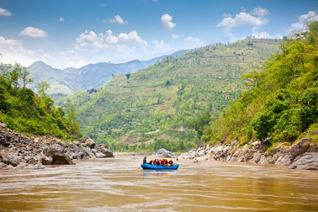
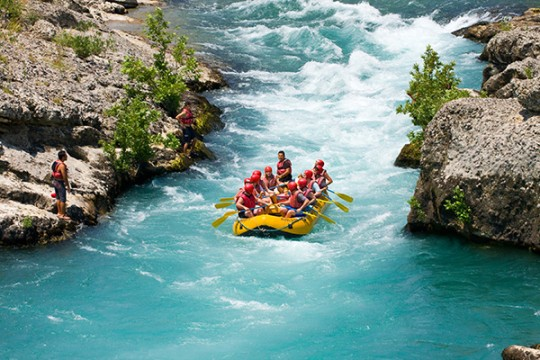
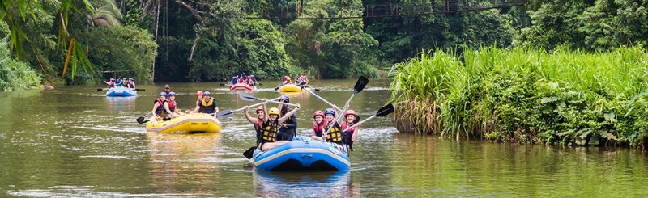

Find Your Adventure
Trips

We offer many thrilling adventures. Each of our rides is expert-certified for safety, and is
guaranteed to get your blood pumping and create a treasured memory.
Whatever you're looking for, we have an adventure for you!

Highlights
The trip will begin with breakfast provided, and you'll meet your guide for the ride. They'll provide a brief orientation, instructing you on how to raft & on safety. We will then transport all rafters to the starting location, where we will receive equipment. After one last safety brief from our guide, you'll venture down the river towards the beautiful scenery. Lunch will be provided midway through the ride as directed. After the ride, we will collect all equipment.

Ride Details

The ride through the local river is anticipated to take about 5-6 hours. All rafters must be at least 14 years of age.
Anyone under 18 is required to have a guardian. We recommend that clients should be reasonably confident in the water,
but it isn't required to know how to swim.
Equipment such as lifejackets, rafts, and paddles will be provided on site. We recommend bringing towels and/or changes
of clothes as desired.
Book Now!
